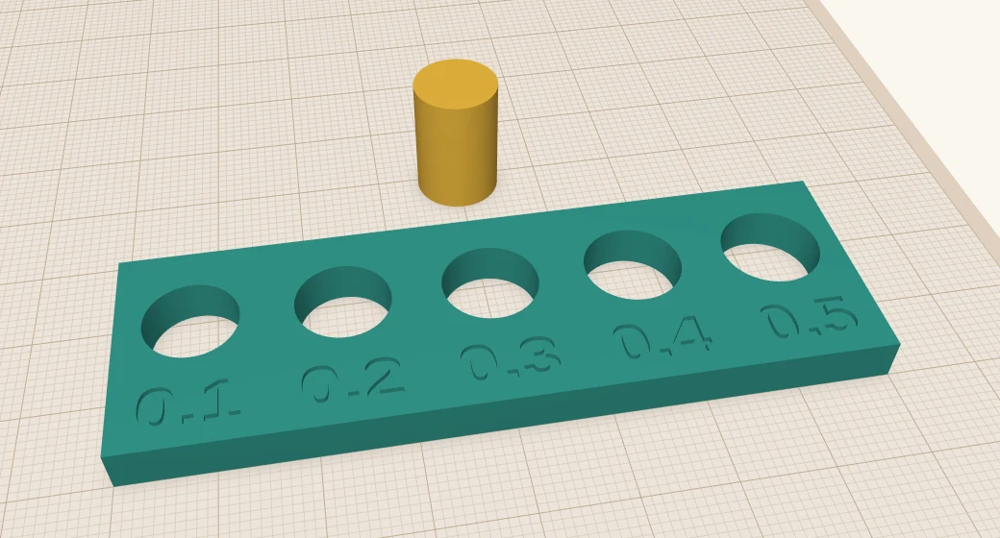
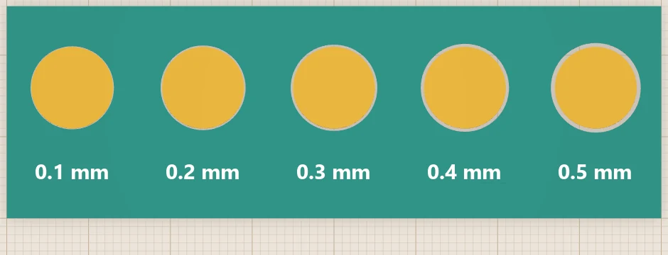
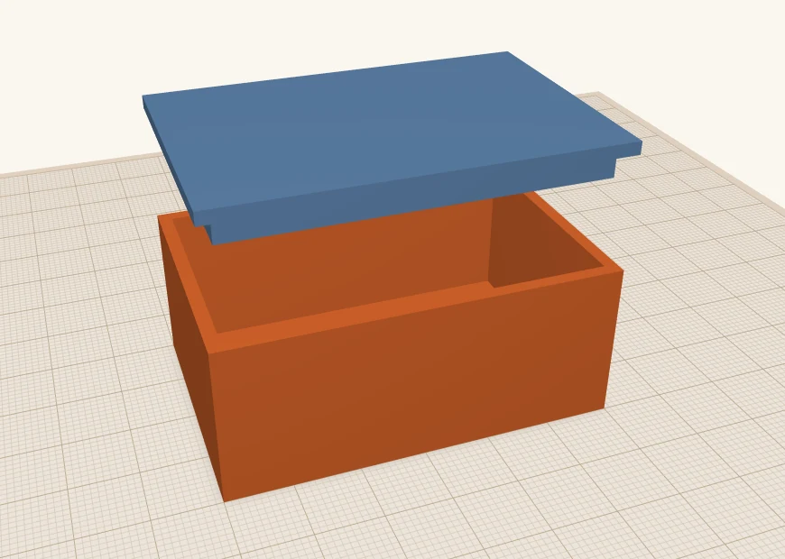
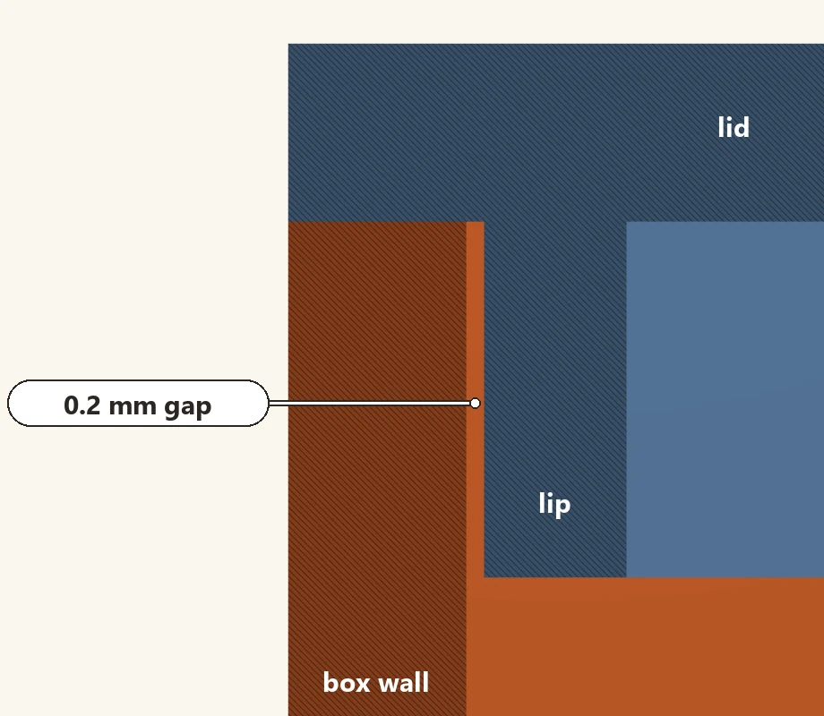

Getting 3D-printed parts to fit together
When you design two parts that are exactly the same size, they usually won't fit together. You need to leave a gap. How big a gap depends on how loose a fit you want, and on your printer. Here is the process I follow, together with a test print to evaluate it.
 Scotti
Scotti
· 5 min read
Sooner or later you have to design a couple of parts that go together. Sometimes it's a lid for a box. Sometimes it's a peg that must fit in a hole. If you make the peg 10 mm and the hole 10 mm and you print them, you may find the peg won't fit. Sometimes it's not even close.
This is because a printer doesn't print exactly what you drew. Plastic squishes out a little as it's laid down, so the outside of a part comes out a touch big and the inside of a hole comes out a touch small. On their own they're tiny errors, but they add up, and two parts of the same size end up fighting each other.
The fix is to leave a gap, which is called clearance. This post is about how much to leave.
The gap goes on both sides
The thing that catches people out first: when I say a 0.2 mm gap, I mean 0.2 mm all the way round. A 10 mm peg with a 0.2 mm gap needs a hole of 10.4 mm, because the gap is on the left and on the right. If you only add 0.2 to the hole, you've only given it 0.1 a side.
How much gap
It depends on the fit you want. These are the gaps I start from, all the way round:
| Fit | Gap | What it's for |
|---|---|---|
| Press fit | 0.1 mm | Parts you push together once, and that stay put. |
| Snug fit | 0.2 mm | Goes together by hand, doesn't rattle. Lids, covers. |
| Sliding fit | 0.3 mm | Moves freely. Drawers, pegs you take in and out. |
| Loose fit | 0.4–0.5 mm | Spins or falls in. Hinges, axles. |
These are starting points. Your printer, your filament and your slicer settings will have an effect, which is why I wrote the next section.
Print a fit gauge
Rather than guess, I usually print a gauge. The gauge is a plate with a row of holes, each hole a little bigger than the last, and a peg to try in them. Push the peg into each hole and you'll find out what 0.1, 0.2 and 0.3 mm feel like on your printer.

It's a script, so it's easy to change. Open Scripting, click the Editor tab, paste this in and press Run (or F5). If you've never run a script, Your first ScottiCAD script walks through it.
# A fit gauge: a 10 mm peg, and a row of holes that get a little bigger.
PEG = 10 # peg size across, in mm
GAPS = [0.1, 0.2, 0.3, 0.4, 0.5] # the gap all the way round the peg, in mm
SPACING = 16 # mm between holes
width = len(GAPS) * SPACING
plate = cad.add_shape("box")
cad.set_bounds(min=[0, 0, 0], max=[width, 26, 5], ids=[plate])
parts = [plate]
for i, gap in enumerate(GAPS):
x = SPACING / 2 + i * SPACING
r = PEG / 2 + gap # the gap is on both sides
hole = cad.add_shape("cylinder", hole=True)
cad.set_param(hole, "sides", 64)
cad.set_bounds(min=[x - r, 16 - r, -1], max=[x + r, 16 + r, 6], ids=[hole])
parts.append(hole)
label = cad.add_shape("text", hole=True)
cad.set_text(label, str(gap))
cad.set_bounds(min=[x - 5, 2.5, 4.4], max=[x + 5, 7.5, 6], ids=[label])
parts.append(label)
cad.group("union", ids=parts)
peg = cad.add_shape("cylinder")
cad.set_param(peg, "sides", 64)
px = width / 2
cad.set_bounds(min=[px - PEG/2, 34, 0], max=[px + PEG/2, 34 + PEG, 15], ids=[peg])
print("made a gauge with", len(GAPS), "holes")If your fits all land at one end, change the GAPS list. For example, [0.05, 0.1, 0.15, 0.2, 0.25] for finer steps at the tight end. I set the holes to 64 sides so they come out properly round. With only a few sides, a hole is a polygon, and it fits like a smaller hole.
Here's what the gaps look like from above, with a peg in each hole. 0.1 mm is barely a hairline. 0.5 mm is a ring you can see.

Print the gauge in the same filament and with the same settings as the real part. If you change either, the fits change. You can also download the gauge ready-made, or the script to run yourself.
A lid that drops on
Here's where I use it most. A lid with a lip that reaches down inside the box keeps the lid from sliding about. Make the lip the box's inside size, less the gap on each side. For a snug lid on a box with 2 mm walls, that's the outside size minus 2 × (2 + 0.2), so 4.4 mm smaller each way.

The best way to check a fit before printing is to cut it open. Put the lid on the box and turn on section view (Shift+K). You get a slice through both parts, and the gap is right there.

There's more on section view in three tools for people who actually print.
Pegs for splitting a big print
When a part is too big for the bed, I split it and glue or screw the halves together. A couple of pegs on one half and matching holes in the other line them up. I use the snug fit, 0.2 mm, so the halves go together by hand but line up properly. I also make the holes 0.5 mm deeper than the pegs, so the faces meet before the pegs bottom out.
Instead of pegs, sometimes I will use screws, and sometimes even heat-set threaded inserts. That makes a more durable joint. There's a whole post on both in screws in 3D prints.
A few more things I've learned
- Holes and pegs fit differently depending on which way they're printed. A hole printed upright, with its axis straight up, comes out round. A hole printed on its side comes out a bit squashed at the top. The gauge only tells you about holes printed upright.
- Watch the first layer. The first layer is squashed onto the bed, so it spreads out a little, and the bottom of a peg comes out wider than the rest. It's called elephant's foot. A small bevel round the bottom edge, or your slicer's elephant's foot setting, sorts it out.
- Bigger parts need a bit more. The gaps above are for small parts. A long lid on a big box warps and drifts a little more, so I go up a step.
- Write your numbers down. Once you've found the fits that work on your printer, you won't need to print the gauge again until you change filament.
More from Scotti's Corner
- Using an AI agent to drive ScottiCAD 7 November 2026
- Screws in 3D prints: inserts and nut traps 31 October 2026
- Your first ScottiCAD script 30 October 2026
- Putting text on your 3D prints 30 October 2026
- Three tools for people who actually print 30 October 2026